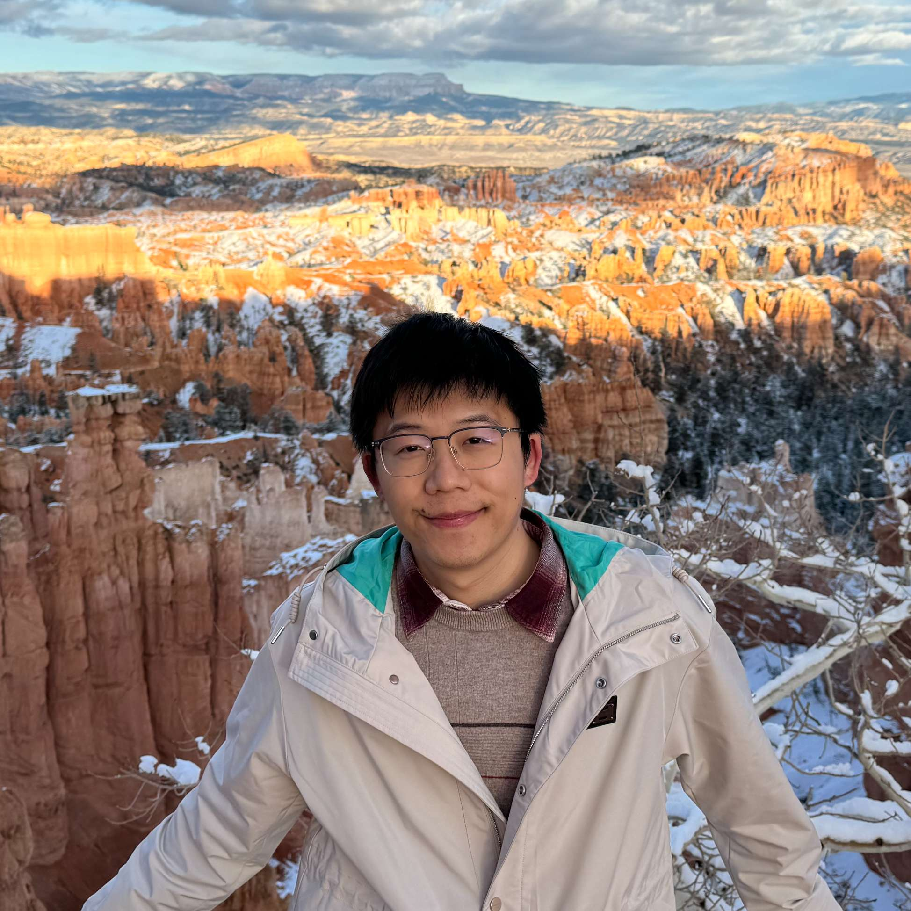

20
Dynamic, high-resolution poverty measurement in data-scarce environments

Department of Computer Science, Stanford University
Bio: I am currently a postdoc at Stanford Artificial Intelligence Laboratory (SAIL), Department of Computer Science, Stanford University, working with Prof. Stefano Ermon, Prof. David Lobell, and Prof. Marshall Burke. I am also Co-Lead of the Working Group on Machine/Deep Learning for Image Analysis (WG-MIA) within IEEE GRSS IADF. I received my Ph.D. in Photogrammetry and Remote Sensing from Wuhan University in 2023, advised by Prof. Yanfei Zhong and Prof. Liangpei Zhang. I obtained B.S. degree from the School of Geography and Information Engineering, China University of Geosciences, Wuhan, China, in 2018.
I study Earth Vision and Simulation, especially multi-modal and multi-temporal remote sensing image understanding and generation. My research is dedicated to advancing original and insightful artificial intelligence technologies for remote sensing, with the goal of addressing pressing societal and environmental challenges and contributing to a more sustainable future for humanity. I pioneered single-temporal change representation learning for change detection and invented many foundational concepts (e.g., change event simulation and semantic change synthesis) as well as key techniques in remote sensing change data generation, making zero-shot change monitoring possible. My research impact has been recognized in Stanford University’s World Top 2% Scientists List (Geological & Geomatics Engineering) for both 2024 and 2025. Meanwhile, I am an enthusiast of remote sensing data science competitions (commonly used ID: EVER), but now I have little time to play these games :(
I am on the 2026-2027 academic job market and seeking faculty positions. Feel free to connect.
Email: zhuozheng [at] cs [dot] stanford [dot] edu; zhengzhuo [at] whu [dot] edu [dot] cn
Serve as Associate Editor of npj Geoinformatics.
One paper about poverty measurement got accepted to JDE.
We are organizing the 3rd Workshop on Computer Vision for Earth Observation (CV4EO) in WACV 2026.
Our DisasterM3 Team won first place (1/261) at the AI for Earthquake Response Challenge by European Space Agency
Selected for Stanford University's World Top 2% Scientists List (Geological & Geomatics Engineering) for 2025.
Serve as Co-Lead of the Working Group on Machine/Deep Learning for Image Analysis (WG-MIA) in IEEE GRSS IADF
NeDS (Neural Disaster Simulation) got accepted to RSE.
We are organizing ICCV workshop SEA: Sustainability with Earth Observation & AI.
Awarded with 2025 AAG RSSG Early Career Award.
TEOChat got accepted to ICLR 2025.
Dynamic, high-resolution poverty measurement in data-scarce environments
Neural disaster simulation for transferable building damage assessment
Highlight: Neural Disaster Simulation (NeDS) simulates disasters with customizable types and intensity levels and generates visually interpretable pseudo bitemporal damage samples to improve transferable building damage assessment.
DisasterM3: A Remote Sensing Vision-Language Dataset for Disaster Damage Assessment and Response
Highlight: DisasterM3 includes 26,988 bi-temporal satellite images and 123k instruction pairs across 5 continents, which features 36 historical disaster events, 9 disaster-related visual perception and reasoning tasks, and Optical-SAR Observation data.
TEOChat: A Large Vision-Language Assistant for Temporal Earth Observation Data
Highlight: TEOChatlas, the first temporal EO instruction-following dataset that has >500k instruction-following examples, spanning dozens of spatial and temporal reasoning tasks. TEOChat is the first VLM that can converse about temporal earth observation imagery.
Changen2: Multi-Temporal Remote Sensing Generative Change Foundation Model
Highlight: Generative Change Foundation Model, Changen2 can be trained at scale using self-supervision, yielding change supervisory signals from unlabeled single-temporal images; The resulting task-specific foundation model possesses inherent zero-shot change detection capabilities and excellent transferability.
Segment Any Change
Highlight: Zero-shot Change Detection is introduced for the first time; Training-free Adaptation for Foundation models.
Towards transferable building damage assessment via unsupervised single-temporal change adaptation
Highlight: Transferable building damage assessment; Unsupervised single-temporal change adaptation (STCA) enables models to achieve adaptation with only target pre-disaster images.
Unifying Remote Sensing Change Detection via Deep Probabilistic Change Models: From Principles, Models to Applications
Highlight: Unified probabilistic change modeling: Probabilistic Change Model (PCM); and strong model instance: ChangeSparse.
Single-Temporal Supervised Learning for Universal Remote Sensing Change Detection
Highlight: ChangeStar2: STAR with Faster and More Stable Convergence; Universal Remote Sensing Change Detection (object, semantic, class-agnostic, time-series change)
Scalable Multi-Temporal Remote Sensing Change Data Generation via Simulating Stochastic Change Process
Highlight: New direction: Generative Change Modeling; Changen, Change generator, enables object change generation with controllable object property and change event; Effective synthetic change data pre-training.
The method has been included in Esri ArcGIS.
FarSeg++: Foreground-Aware Relation Network for Geospatial Object Segmentation in High Spatial Resolution Remote Sensing Imagery
The method has been included in Esri ArcGIS.
ChangeMask: Deep Multi-task Encoder-Transformer-Decoder Architecture for Semantic Change Detection
Highlight: Disentangled semantic and change representation and temporal symmetric transformer (TST) for semantic change detection.
Building Damage Assessment for Rapid Disaster Response with a Deep Object-based Semantic Change Detection Framework: from natural disasters to man-made disasters
Highlight: A deep object-based semantic change detection method for building damage assessment in the context of disaster response.
Our solution is xView2 4th overall officially, which is a unique single-model solution among top-5.
Change is Everywhere: Single-Temporal Supervised Object Change Detection in Remote Sensing Imagery
Highlight: A single-temporal supervised learning algorithm and a plug-and-play change detection head: ChangeMixin for change detection.
The method has been included in microsoft/torchgeo and PaddlePaddle/PaddleRS and Esri ArcGIS.
LoveDA: A Remote Sensing Land-Cover Dataset for Domain Adaptive Semantic Segmentation
Deep Multisensor Learning for Missing-Modality All-Weather Mapping
Highlight: A registration-free multi-modal/sensor learning algorithm via exploring meta-modal/sensory representation for all-weather mapping.
Foreground-Aware Relation Network for Geospatial Object Segmentation in High Spatial Resolution Remote Sensing Imagery
Highlight: Explicit foreground modeling from the perspectives of relation and optimization for real-time geospatial object segmentation.
The method has been included in microsoft/torchgeo and PaddlePaddle/PaddleRS and Esri ArcGIS.
FPGA: Fast Patch-Free Global Learning Framework for Fully End-to-End Hyperspectral Image Classification
Highlight: Patch-free is all you need towards faster and stronger hyperspectral image classification.
The method has been included in WHULuoJiaTeam/luojianet.
HyNet: Hyper-scale object detection network framework for multiple spatial resolution remote sensing imagery
Highlight: Hyper-scale = Multi-scale × Multi-scale, a new perspective of scale modeling at the convolutional groups.
COLOR: Cycling, Offline Learning, and Online Representation Framework for Airport and Airplane Detection Using GF-2 Satellite Images
Highlight: Evolvable model and dataset: making your model and dataset both great again for new domain data.
IEEE Transactions on Pattern Analysis and Machine Intelligence (TPAMI)·International Journal of Computer Vision (IJCV)·Remote Sensing of Environment (RSE)·ISPRS Journal of Photogrammetry and Remote Sensing (ISPRS P&RS)·IEEE Transactions on Geoscience and Remote Sensing (TGRS)·IEEE Transactions on Image Processing (TIP)·IEEE Transactions on Neural Networks and Learning Systems (TNNLS)·IEEE Transactions on Cybernetics (TCYB)·IEEE Transactions on Circuits and Systems for Video Technology (TCSVT)·IEEE Geoscience and Remote Sensing Letters (GRSL)·IEEE Journal of Selected Topics in Applied Earth Observations and Remote Sensing (JSTARS)·International Journal of Applied Earth Observation and Geoinformation (JAG)·International Journal of Remote Sensing (IJRS)
ICML (2024–2025)·ICLR (2024–2025)·ICCV (2023–2025)·ECCV (2022–2024)·CVPR (2022–2026)·NeurIPS (2021, 2023, 2024)